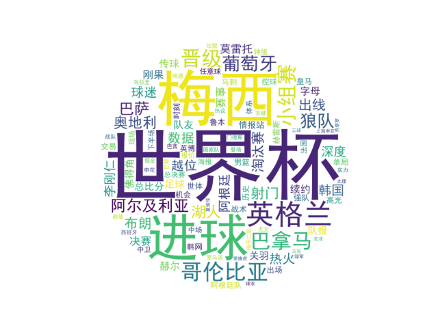

基于虎扑体育各大核心专区24小时内的新闻发布量、互动回复数据及热点话题的文本挖掘
作为中国最具人气的体育垂类社区之一，虎扑（Hupu）不仅是体育资讯的集散地，更是球迷情感宣泄与深度讨论的“主战场”。本数据新闻项目通过抓取24小时内虎扑各专区的数据，试图解答：哪类体育赛事是社区里的“内容产出大户”？又是哪些话题能激起球迷最强烈的互动欲望？

通过对24小时内的数据进行观察，我们发现了一个非常有趣的“冷热分化”现象。首先，在新闻供给侧，国际足球资讯以绝对优势（171篇新闻）占据了内容产出的半壁江山，这得益于国际足球庞大的赛事基数与资讯源。然而，高产出并不等同于高粘性，其平均回复量仅为85.6，属于中等水平。
相比之下，篮球板块展现出了极强的内容吸粉能力和用户互动黏性。作为篮球迷核心聚集地的“湿乎乎的话题”专区，虽然24小时内仅产出了7篇新闻（帖子），但其总回复量却高达1,370次，平均回复量更是高达195.7，高居全站第一。这表明篮球论坛的用户更倾向于在少数焦点话题下进行深度的“盖楼”讨论和观点交锋。
此外，电竞板块（英雄联盟、王者荣耀）展现出“高产出、低互动”的特征（平均回复仅在11~40左右），表明在传统的体育垂类社区中，核心用户群体依然牢固地被足球和篮球所吸引。词云图的分析也进一步印证了这一点，热点词汇依然高度围绕核心球星和当日热赛展开。